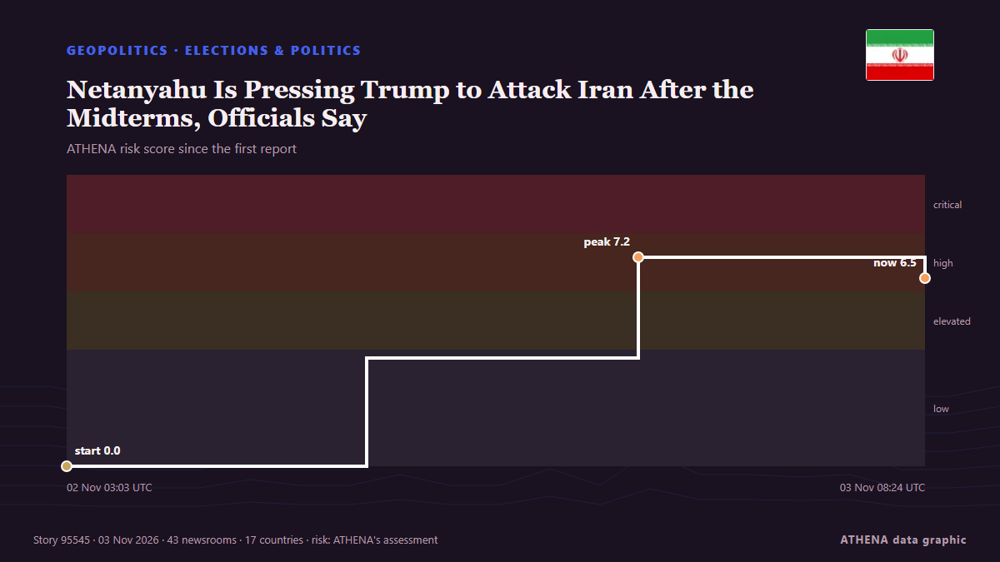

Netanyahu Is Pressing Trump to Attack Iran After the Midterms, Officials Say

Democratic doctors aim to convert the backlash against the Trump administration’s health policies into midterm votes. из Al Jazeera English
Независимые источники: 43 издания в 17 странах, с 31 окт.; первым сообщил Al Jazeera English; освещение идёт на спад. ATHENA оценивает риск как высокий (6.5/10), прежде всего из-за тяжести описываемого ущерба и географического и отраслевого охвата. Уверенность — 89 % (высокая); подтверждают независимые источники: 43 издания, средняя надёжность источников — 74 %. СМИ по странам: Соединенные Штаты (14), Великобритания (4), Израиль (4). Освещение: с 31 окт. по 2 нояб., 45 ч.
Почему это важно: События в сфере безопасности и дипломатии могут менять союзы, торговлю и рынки далеко за пределами непосредственно затронутых стран.
Что изменилось: 34 новых сообщений от 28 редакций за 24 часа до 3 нояб..
Первый заголовок: Trump says he had 'very good talk' with Netanyahu, discussed Iran
Заголовки приводятся на английском языке, как они были опубликованы.
Коротко в цифрах
Отобрано, оценено и написано по опубликованной методологии ATHENA. Ни один редактор не вмешивается в отдельные события. Как это создаётся ›
| 31 Oct 17:19 UTC | 1 |
|---|---|
| 31 Oct 20:19 UTC | 1 |
| 31 Oct 23:19 UTC | 0 |
| 01 Nov 02:19 UTC | 0 |
| 01 Nov 05:19 UTC | 0 |
| 01 Nov 08:19 UTC | 3 |
| 01 Nov 11:19 UTC | 1 |
| 01 Nov 14:19 UTC | 1 |
| 01 Nov 17:19 UTC | 5 |
| 01 Nov 20:19 UTC | 1 |
| 01 Nov 23:19 UTC | 1 |
| 02 Nov 02:19 UTC | 7 |
| 02 Nov 05:19 UTC | 1 |
| 02 Nov 08:19 UTC | 13 |
| 02 Nov 11:19 UTC | 5 |
| 02 Nov 14:19 UTC | 5 |
| 02 Nov 17:19 UTC | 4 |
| 02 Nov 20:19 UTC | 5 |
| 02 Nov 23:19 UTC | 0 |
| 03 Nov 02:19 UTC | 0 |
| 03 Nov 05:19 UTC | 1 |
| 02 Nov 03:03 UTC | 0.0 |
|---|---|
| 02 Nov 13:18 UTC | 3.7 |
| 02 Nov 22:35 UTC | 7.2 |
| 03 Nov 08:24 UTC | 6.5 |
| 03 Nov 08:24 UTC | 6.5 |
Откуда эти цифры
Значимость
Риск
Уверенность
Освещение — кто сообщил и когда
заголовок в оригинале · открывает источник- Al Jazeera English · КатарA cure for Trump? Why Democratic doctors are running in the 2026 midterms
- New Straits Times · МалайзияMONEY THOUGHTS: Plan for the many dimensions of your complex life
- The Economist - Finance & economics · ВеликобританияHow the Iran war has sowed panic among farmers
- The Economist - Finance & economics · ВеликобританияThe Iran war puts Asia in an energy panic
- Gulf News · ОАЭGCC urges Iran to respond to peace efforts as Britain strengthens Gulf defences
- Tehran Times · ИранIran’s 40-Day War Changed How People Travel
- Times of India · ИндияHow Iran targeted US air-defence network in the Gulf: Report
- The Jerusalem Post · ИзраильIsrael, US have plan ready for third Iran war, Tehran's hidden weapons pose challenges - analysis
- The Jerusalem Post · ИзраильIsrael ready to strike Iran with US, but specific joint goals remain unclear - sources
- The Independent · ВеликобританияTrump celebrates Halloween by melting down on another reporter at Mar-a-Lago party
- Fortune · Соединенные ШтатыAs Trump eyes new attack, Iran vows to retaliate beyond the Mideast and target financial assets, while oil markets brace for generational damage
- ABC News Australia · АвстралияMore storms looming for SEQ as 'extreme' heatwave hits Gulf country
- The Hill · Соединенные ШтатыBacon thinks there will be 'debate' about MAGA future if GOP does poorly in midterms
- Express Tribune · ПакистанTehran engaged in ‘intensive shuttle diplomacy’ through Qatari, Pakistani mediators: Araghchi
- Haaretz (English) · ИзраильNetanyahu's Likud weighs refusing to recognize election results
- CNBC World · Соединенные ШтатыRubio says Trump wants to end Iran war 'peacefully' even as both sides prepare for strikes
- TASS (English) · РоссияTrump doesn't intend to resume strikes against Iran right after midterm elections — Axios
- The Jerusalem Post · ИзраильNetanyahu urges Trump to attack Iran as US pursues further negotiations before midterms - report
- BBC News · ВеликобританияHow a Democrat in Michigan rocked the party days before the US midterms
- Foreign Policy · Соединенные ШтатыDon’t Read Too Much Into These Midterms
- Responsible Statecraft · Соединенные ШтатыUnhinged attacks against El-Sayed reach a fever pitch
- Türkiye Today · ТурцияTrump says US can 'close down' Iran anytime as Gulf braces for worst
- TASS (English) · РоссияTrump may pin blame for war with Iran on Pentagon chief — magazine
- CBC News · КанадаEconomic frustration set to boil over in U.S. midterm elections
- Indian Express · ИндияUS Midterms: Why the swing state map looks different from 2024 presidential election
- The Straits Times · СингапурEurope space chief heads to Gulf as bloc looks beyond US
- Gulf News · ОАЭUS-Iran showdown: Trump keeps world guessing as Mideast remains on edge
- NPR World · Соединенные ШтатыHow Arab Gulf states view Trump's Iran war plan
- NPR World · Соединенные ШтатыGulf region on edge over possibility of renewed U.S. attacks against Iran
- NPR · Соединенные ШтатыMorning news brief
- Al-Monitor · Соединенные ШтатыEurope space chief heads to Gulf as bloc looks beyond US
- Free Malaysia Today · МалайзияEurope space chief heads to Gulf as bloc looks beyond US
- Business Insider · Соединенные ШтатыThis crypto billionaire is spending tens of millions in the midterms to take on AI companies and the GOP
- New York Times Business · Соединенные ШтатыGulf Economies, Torn by War in Iran, Desperately Need a Return to Normal
- France 24 English · ФранцияMidterms: Will Trump backlash lead to Democratic landslide?
- NPR World · Соединенные ШтатыHaley Stevens backs Mike Rogers. And, Gulf states brace for potential attack on Iran
- Hindustan Times · ИндияTrump’s midterm test: What India is watching as global power equations shift
- Türkiye Today · ТурцияNetanyahu’s best hope may be Iran saying no to diplomacy
- gCaptain · Соединенные ШтатыUAE to Protect Energy Infrastructure, Invest in New Export Routes to Prepare for Iran War, Minister Says
- Skift · Соединенные ШтатыWar Insurance Dries Up for Gulf Events as U.S.-Iran Conflict Continues